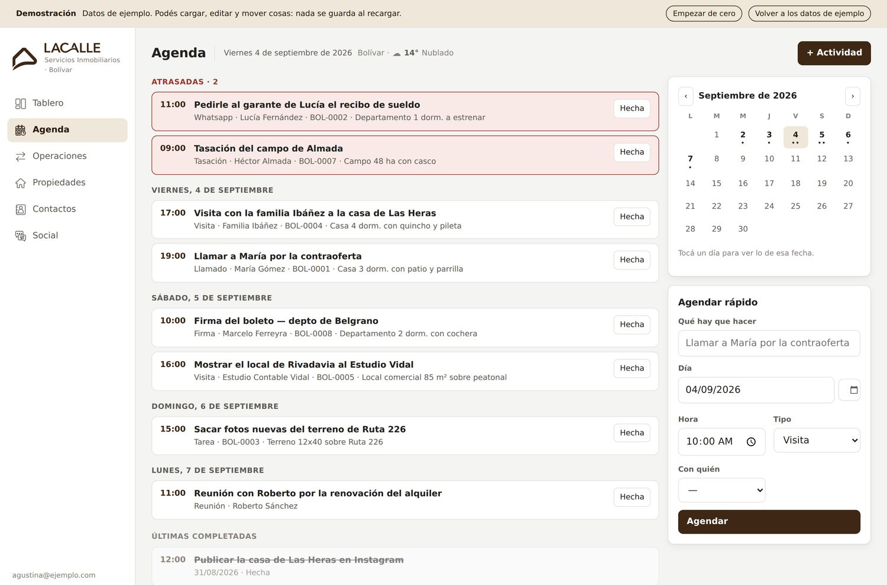
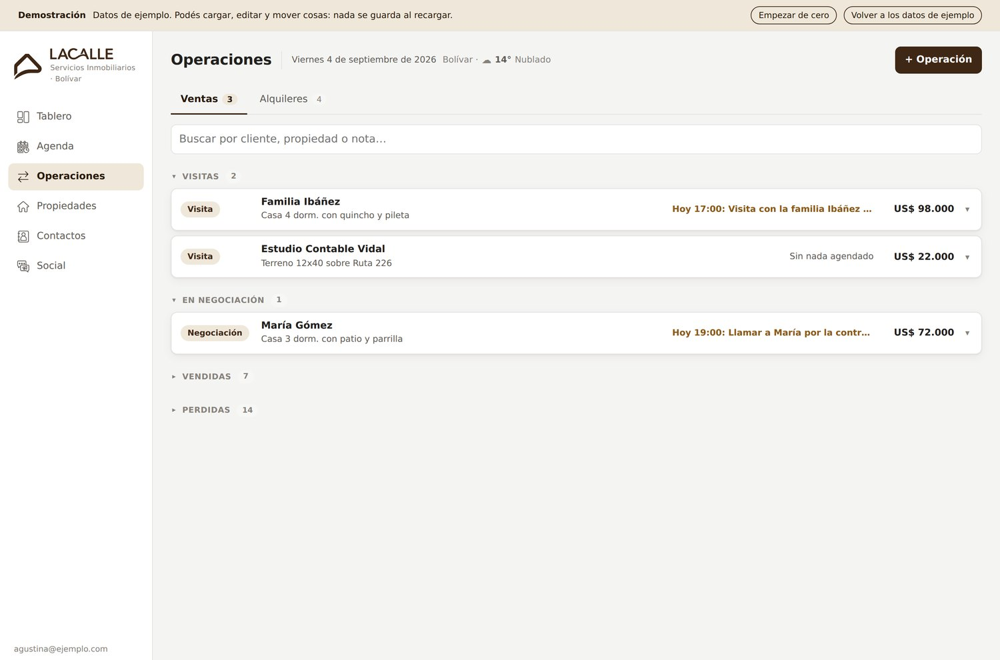
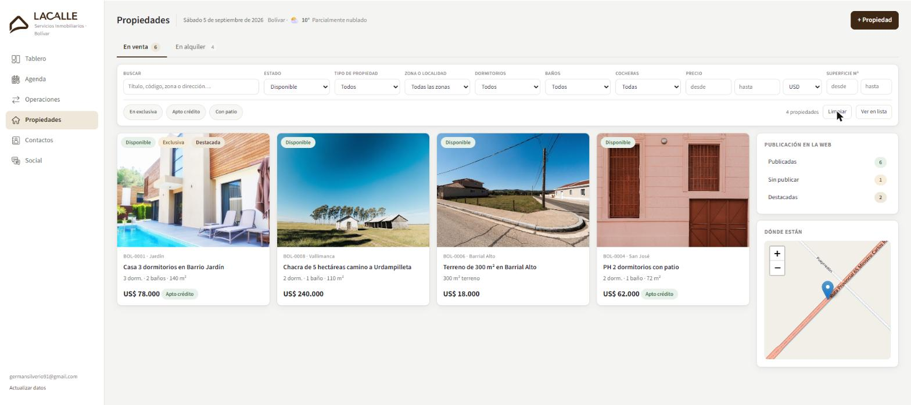
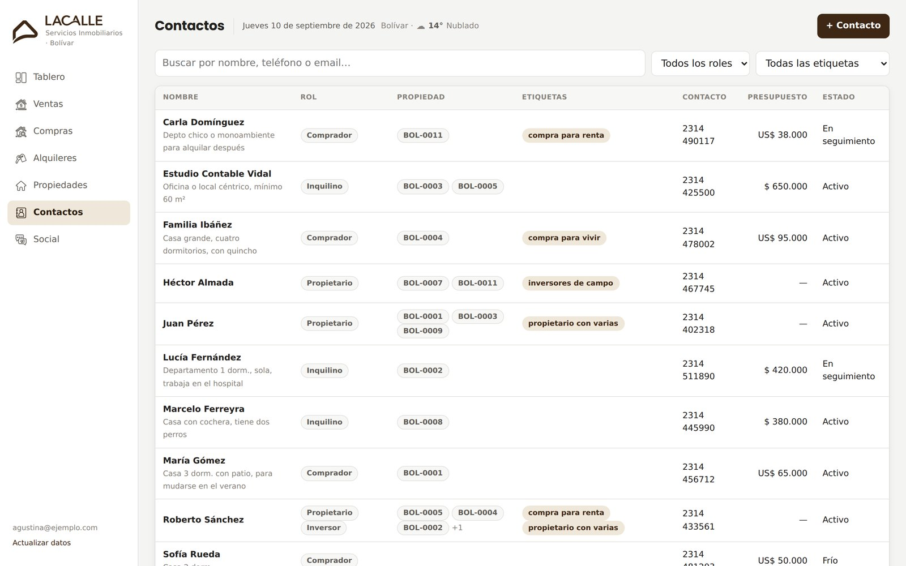
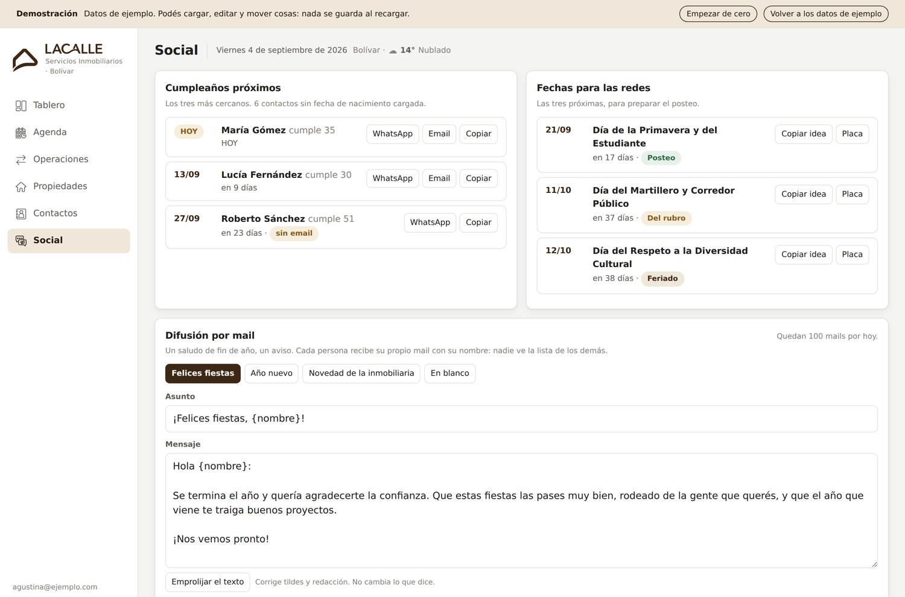

CRM Lacalle Servicios Inmobiliarios
Sistema de gestión completo para una martillera que se lanzó por su cuenta. Del cero a producción, con el sitio web, en menos de diez días.
- Contactos, propiedades, pipeline, agenda, métricas, fotos y mails con firma
- Redacción de avisos asistida por IA (Gemini)
- Descarté Postgres: cero cuentas nuevas para ella, respaldo por historial de Drive
- 4 suites de tests, releases fechadas con vuelta atrás, dos manuales
Dejó las planillas sueltas. El tiempo que gastaba en administrar se le fue a clientes, contenido y marca — y todo eso vuelve al CRM como insumo.
- Apps Script
- Sheets
- Drive API
- Gemini




